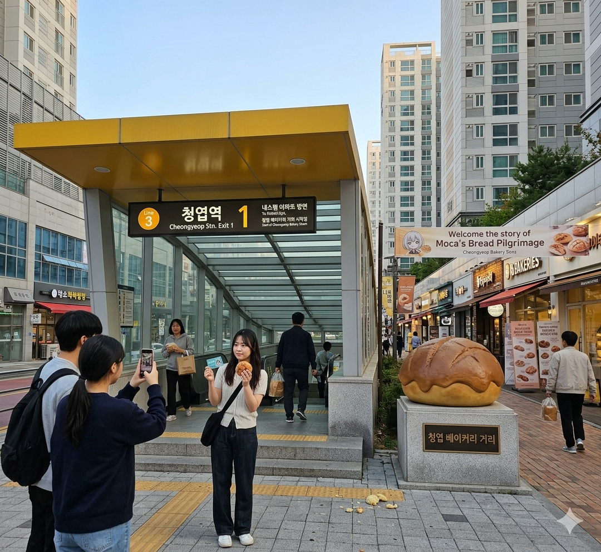
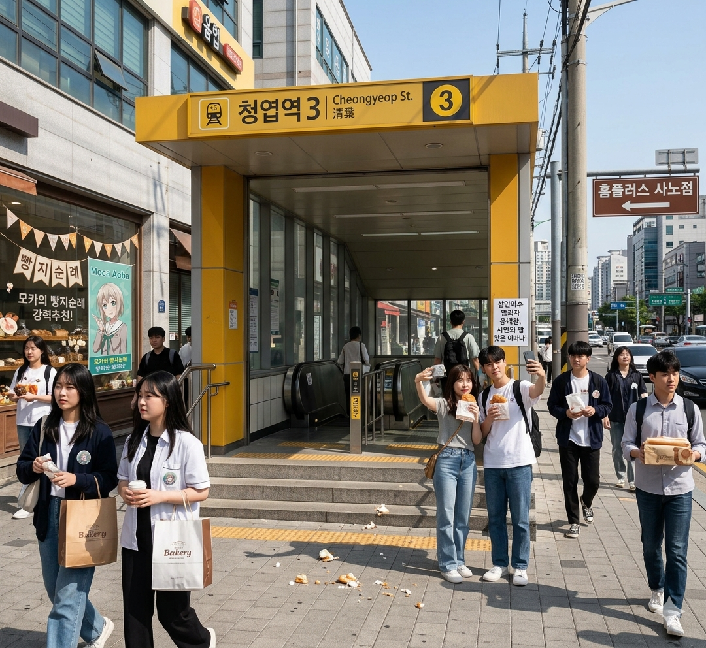

출소 직후 또 난동? 윤대환 전 시장, 청엽역서 시민들에게 '빵 세례' 굴욕 도주
입력 2017.10.24. 16:30 | 수정 2017.10.24. 17:15
윤대환 전 시장, 청엽역 '빵지순례' 중이던 시민들에게 폭언하며 행패
"불순한 문화와 빵 쪼가리로 도시 더럽힌다" 억지 주장 펴다 역풍
분노한 시민들, 모카빵·메론빵 투척하며 항의... 윤 전 시장 황급히 도주
日 성우 "빵 한 조각의 행복을 모르는 불쌍한 사람" 일침... 국제적 망신살

[효빈일보 = 김기자] 살인미수 및 폭력 교사 등의 혐의로 징역을 살고 최근 출소한 윤대환 전 효빈시장이 대낮에 지하철역 광장에서 시민들을 상대로 난동을 부리다 '빵 세례'를 맞고 쫓겨나는 초유의 굴욕 사건이 발생했다.
사건은 24일 오후 2시경, 효빈도시철도 3호선 청엽역 앞 베이커리 거리에서 일어났다. 청엽구 일대는 역명인 '청엽(靑葉)'이 일본 유명 애니메이션 캐릭터 '아오바 모카(青葉モカ)'의 성씨와 일치한다는 점과, 해당 캐릭터가 빵을 좋아한다는 설정이 지역의 대형 베이커리 상권과 맞물려 이른바 **'모카의 빵지순례'** 명소로 젊은 층 사이에서 큰 인기를 끌고 있는 곳이다.
목격자들에 따르면, 윤 전 시장은 돌연 청엽역 광장에 나타나 빵을 들고 기념사진을 찍던 방문객과 시민들을 향해 고성을 지르기 시작했다. 그는 **"어디서 불순한 외래 문화를 들여와 우리 고유의 도시 인프라를 빵 쪼가리로 더럽히느냐! 당장 효빈시에서 나가라!"**며 시민들의 앞을 가로막고 물리적 위협을 가하려 했다.

그러나 과거 그의 강압적인 시정에 짓눌렸던 시민들은 이번엔 물러서지 않았다. 윤 전 시장의 상식 밖의 행태에 격분한 시민들과 방문객들은 들고 있던 모카빵, 메론빵, 크루아상 등을 윤 전 시장을 향해 집어 던지며 강력하게 항의했다. 사방에서 쏟아지는 '빵 세례'와 "빵이나 먹고 정신 차려라!", "범죄자는 조용히 살아라!"라는 시민들의 야유에 당황한 윤 전 시장은 결국 옷에 크림과 빵 부스러기를 잔뜩 묻힌 채 황급히 택시를 잡아타고 도주했다.
이 우스꽝스러운 '빵 테러 굴욕 사건'은 현장에 있던 시민들의 스마트폰 카메라에 고스란히 담겨 SNS를 통해 순식간에 전국으로 퍼져나갔다. 효빈대학교 학생 커뮤니티인 '에브리타임' 등에서는 "살인미수로 감방 다녀오더니 이제 빵 셔틀로 전락했냐"며 조롱이 쏟아지고 있다.
더욱이 이 사건은 바다를 건너 일본에까지 알려지며 국제적인 망신살을 뻗쳤다. 해당 캐릭터의 목소리를 연기한 일본 성우는 자신의 라디오 프로그램에서 사건을 언급하며 **"맛있는 빵을 무기로 쓰게 만들다니 너무 슬프다. 빵 한 조각이 주는 행복조차 모르는 정말 불쌍한 사람"**이라고 꼬집어, 맹목적인 고립주의에 빠진 전직 시장의 편협함을 간접적으로 비판했다.
경찰은 현장에 출동했으나 윤 전 시장이 이미 도주한 뒤였으며, 빵을 투척한 시민들에 대해서도 별도의 입건 조치는 취하지 않았다고 밝혔다. 시민들은 "자신의 죄를 뉘우치기는커녕 여전히 과거의 권위주의와 혐오에 갇혀 있는 윤대환의 찌질한 밑바닥을 보았다"며 혀를 차고 있다.